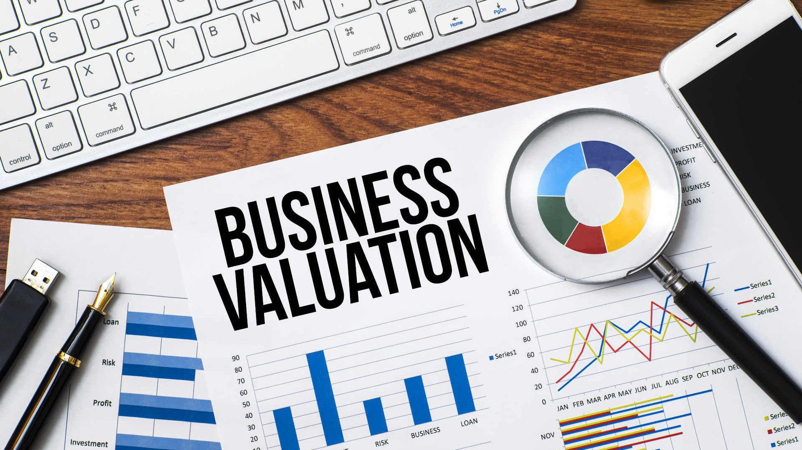

Attention-based valuation model for trading


A platform entrepreneur identifies targetable audiences, groups of ready-connected or connectable persons, and builds a platform that helps the members of each of these audiences make more leveraged connections and interactions between them. Once the platform is there the audience member allocate a part of their budget of attention to it. The more the platform helps them achieve their goals, the more they will allocate attention. If this attention is really exploited by this platform entrepreneur for creating values that these audiences can clearly see and extract easily other values out of them, the audience members will credit positively the trust’s score of this platform and be less closed to the idea of providing more of what they can which can be an exchangeable currency like a dollar, a bitcoin or simply gold. This is really what a frictionless marketing funnel is, it is about attention and trust that lead to effortless cooperation and collaboration among the parts involved in the platform. Here The platform is an adaptative system while the most important parts are us human beings who are platforms' entrepreneurs, employees, users, customers, visitors, and consumers. Pricing attention is an interesting topic that I am glad to deal with, when I was first interested in financial systems and services I had never thought that I would a day deal with such important pricing model that can lead to a very powerful business valuation tool and an innovative data as signal for trading systems.
Attention is exchanged like a commodity there is an attention economy under our today's digitalized economy and maybe this attention economy is the most important part of the world economy we are living in now and it is very likely that this attention economy drives the whole world economy.
PS: will soon start valuing businesses with these attention and trust metric and publishing valuation articles here. if you want be notified when published follow me.
This has something to do with Book Dojo